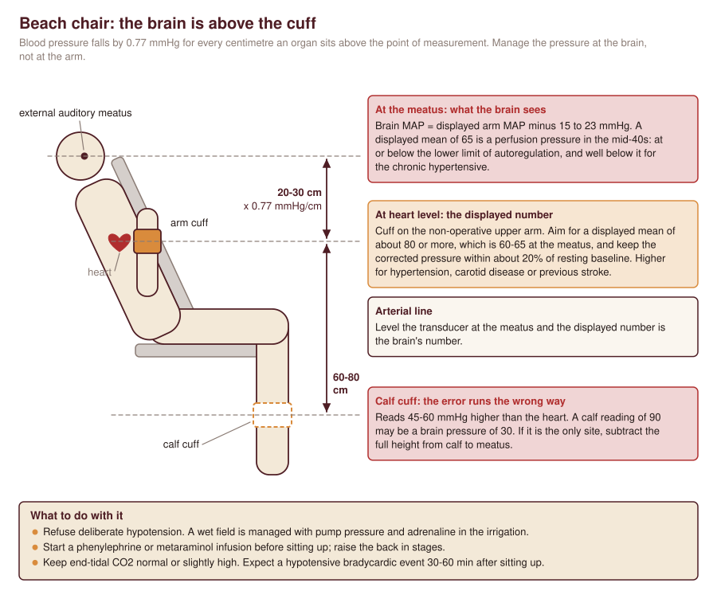

![Side-view schematic of a prone patient on a frame with supports under the chest and iliac crests, the abdomen hanging free, arms forward on a board and numbered markers 1 to 8. Eight boxes explain each point: eyes and face, airway, arms and brachial plexus, chest support, abdomen free, iliac crests, knees and feet, head height and vision. A panel lists the neuromonitoring anaesthetic: propofol and remifentanil, one dose of relaxant, bite blocks, steady state, stable physiology and raising mean pressure above 80-90 mmHg for a signal change.](../img/prone-pressure-points.svg)
What a position costs
Positioning injuries have four mechanisms, and each position in this chapter is a different mix of them.
Gravity acts on a column of blood. Any organ lifted above the heart is perfused at a pressure lower than the one measured at the heart, by 0.77 mmHg for every centimetre of height (about 2 mmHg for every 2.5 cm). Any limb lifted above the heart drains well and fills poorly. This is the beach chair problem for the brain and the hemilithotomy problem for the calf.
Stretch acts on nerves. A peripheral nerve tolerates only a small elongation before its intraneural blood flow stops; the brachial plexus, fixed at the vertebral foramina and the axillary sheath and slung over the first rib and under the clavicle, is stretched by abduction beyond 90 degrees, by external rotation with extension, by the head turned or tilted away, and by a shoulder that sags backwards off a support.
Pressure acts on nerves and skin where they lie between bone and a hard surface: the ulnar nerve in its groove, the common peroneal nerve on the fibular neck, the lateral femoral cutaneous nerve under an iliac bolster, the pudendal nerve against a perineal post, the eye against a headrest.
Compression acts on compartments and cavities. A belly pressed on by a bolster transmits pressure to the vena cava and from there to the epidural veins. A calf resting in a support has its compartment pressure raised from outside.
General anaesthesia and regional blocks both remove the warning. The awake patient shifts an arm that has gone numb; the anaesthetised or blocked patient cannot. Duration multiplies everything.
Beach chair
Used for anatomic and reverse shoulder arthroplasty, rotator cuff repair, stabilisation and most other shoulder arthroscopy, proximal humerus and clavicle surgery. The surgeon gains a shoulder in its anatomical orientation, an arm that hangs free for manipulation, less traction on the plexus than the lateral position, and easy conversion to an open approach.
The hydrostatic gradient
external auditory meatus -------- brain sees: cuff MAP - 15 to 23
|
| 20-30 cm x 0.77 mmHg/cm
|
arm cuff at heart level -------- displayed MAP (say 65)
|
| 60-80 cm
|
calf cuff -------- reads 45-60 mmHg HIGHER than heart
With the back raised 60-80 degrees the circle of Willis is 20-30 cm above the upper arm cuff. A displayed mean pressure of 65 mmHg is a cerebral perfusion pressure in the mid-40s before any allowance for venous or intracranial pressure. That is at or below the lower limit of autoregulation for many normal brains and well below it for the chronic hypertensive, whose curve is shifted to the right. A cuff moved to the calf because the other arm is unavailable makes the error far larger in the wrong direction: the reading is inflated by the height of the heart above the calf, so a calf reading of 90 mmHg may be a brain pressure of 30 mmHg.
General anaesthesia makes the position worse than it is in an awake volunteer. Sitting pools blood in the legs and splanchnic bed, anaesthesia blocks the sympathetic response that would normally compensate, cardiac output falls, and positive pressure ventilation with hypocapnia adds cerebral vasoconstriction. In 124 patients under a standardised general anaesthetic, cerebral desaturation events occurred in 80.3% of those in the beach chair and in none of those in the lateral position. In the APSF-funded study of 218 patients, the beach chair group had lower cerebral saturation and measurably impaired autoregulation, but no difference in cognition or injury biomarkers afterwards. Together these say that reduced cerebral oxygenation in the beach chair is common and usually harmless, which is the setting in which a rare catastrophe hides.
The catastrophes are real. The first case series described four patients with ischaemic brain and spinal cord injury after beach chair shoulder surgery, middle-aged, without the vascular risk factors that would have predicted a stroke; the authors attributed the injuries to the position and to how blood pressure was managed in it. The APSF advice that followed, restated by Cullen in 2020, is simple: think of the pressure at the brain, not at the cuff; calculate the gradient and correct for it; and do not use deliberate hypotension in the sitting patient. Cullen argues the 2009 APSF allowance of a 30% fall from baseline should go, and that cuff pressure be kept at or very near the awake baseline.
Practical rules
- Cuff on the non-operative upper arm at heart level. If an arterial line is used, level the transducer at the external auditory meatus so that the displayed number is the brain’s number.
- Set the target at the brain: a mean of at least 70 mmHg at the level of the meatus, which is a displayed arm-cuff mean of about 80 mmHg or more, and keep the corrected pressure within about 20% of the patient’s resting baseline. For the chronic hypertensive, the patient with carotid disease or a previous stroke, set it higher. These thresholds are consensus, not trial-derived.
- Never use a leg cuff uncorrected. If the calf is the only site, subtract the full height difference between calf and meatus.
- Refuse deliberate hypotension. A wet arthroscopic field is managed with pump pressure, adrenaline in the irrigation, and a systolic that is normal for the patient, not low.
- Run a vasopressor from the start: a phenylephrine or metaraminol infusion begun before sitting up, with the patient raised in stages and the pressure checked after each. Keep end-tidal CO2 normal or slightly high; hypocapnia narrows the margin.
- Expect the hypotensive bradycardic event. A sudden fall in heart rate and pressure 30-60 minutes after sitting up, classically in the awake or lightly sedated patient with an interscalene block containing adrenaline, is attributed to an underfilled, vigorously contracting ventricle triggering a vagal reflex. Treat with ephedrine or atropine and fluid, lower the back if it persists.
- Fix the head in neutral. Rotation, lateral flexion and extension each narrow a vertebral or carotid artery and stretch the plexus on the operative side; the head strap must not sit on the eyes, the ear or the greater auricular nerve. Check after every change of table position, because the head moves when the back is raised.
- Secure the airway for a position in which it cannot be reached. The head is draped and at the far end of the patient from the machine. A tracheal tube taped on the side away from the surgeon is the default for long or open procedures; a supraglottic airway is defensible for short arthroscopies when the head is fixed and access has been rehearsed.
Cerebral oximetry detects the desaturation and guides the vasopressor, but no trial shows that treating the number prevents injury. It is reasonable in the patient with cerebrovascular disease and unnecessary as routine if the pressure is managed at the brain. The alternative is a regional technique with light sedation, which preserves autoregulation and lets the patient report symptoms; the block menu covers the choice.
Lateral decubitus
Used for the posterior approach to the hip, revision hip, some shoulder arthroscopy and stabilisation, lateral lumbar fusion and some acetabular fixation.
The pelvis is clamped between an anterior support on the pubis or the anterior superior iliac spines and a posterior support on the sacrum. The anterior support is the hazard: set too low or too tight it compresses the femoral vessels and nerve of the dependent leg, or in an obese patient the abdomen and vena cava. Check the dependent foot pulse and that a hand slides between the support and the abdomen.
The dependent shoulder and plexus carry the weight of the chest. A roll under the chest wall just caudal to the axilla (not in it) lifts the thorax off the shoulder; the head is supported so the cervical spine is in line with the thoracic spine, because lateral flexion toward the table stretches the upper plexus and compresses the lower. The dependent arm lies forward on a board at no more than 90 degrees, the upper arm on a gutter or pillow at no more than 90 degrees and not pulled forward. The dependent eye and ear must be free of the headrest; the dependent common peroneal nerve is padded at the fibular neck and a pillow separates the knees.
For shoulder arthroscopy in the lateral position the arm is suspended in abduction and forward flexion with longitudinal traction. The plexus injuries reported in this position are traction neurapraxias, so the weight is kept as low as gives a view and the arm is not held in extreme abduction. Irrigation fluid tracks into the neck and chest wall in long cases; feel the neck and check airway pressures before extubating.
Physiologically, under general anaesthesia the dependent lung is well perfused and poorly ventilated, so shunt rises in the obese and in long cases. A dense block or a long operation on a heavy patient puts the dependent gluteal muscles and greater trochanter at risk of pressure necrosis; revision surgery beyond three or four hours in a large patient is the setting for dependent-side rhabdomyolysis.
For the lateral approach to the lumbar spine the table is broken to open the space between rib and iliac crest. The break stretches the upper-side psoas and lumbar plexus, and the retractor then sits within the psoas; time in the broken position is the modifiable variable.
Prone
Used for posterior lumbar and cervical surgery, deformity correction, decompression, sacroiliac fusion and coccygectomy, and some Achilles, calcaneal and posterior malleolar work. The physiology and the visual loss question are covered in spine essentials; what follows is the checklist logic.
Abdomen. The purpose of every prone frame is to let the abdomen hang free. A compressed abdomen raises caval pressure, diverts venous return through the vertebral plexus and makes the epidural veins bleed into the wound; it also splints the diaphragm and raises airway pressure. Supports belong on the chest and the iliac crests. Airway pressure after turning that is much higher than it was supine means the abdomen is not free or the tube has moved.
Eyes and face. The globe must carry no pressure at any point in the case: direct pressure causes central retinal artery occlusion, a different and more preventable injury than the ischaemic optic neuropathy of long spinal operations. Use a contoured foam head support with cut-outs or skull pins, keep the head neutral and at or above the level of the heart, and look at or palpate the eyes and nose at intervals and after any table movement, recording each check. A mirror or camera system makes this easy. The forehead, chin and nose are the pressure points; the tongue should be inside the teeth with a soft bite block.
Airway. The tube is fixed for a position in which re-intubation is nearly impossible: tape that will survive saliva, the tube depth noted, a reinforced tube where the neck will be flexed. After long prone cases with large fluid volumes the face, tongue and larynx swell; check for a cuff leak and consider delayed extubation. An operating trolley stays outside the room for emergency supination, and chest compressions can be started prone if it is not immediately available.
Brachial plexus and arms. Two options: arms tucked at the sides, palms in, or arms forward on boards with the shoulders abducted and the elbows flexed. The second gives access to lines and is the default, and it is the position that produces evoked potential changes. In 1,000 monitored spine operations, position-related upper limb SSEP changes occurred in 7.0% of prone patients with the arms abducted and 7.5% of lateral patients, against 1.8-3.2% in other positions; 92% reversed when the arm was moved and none of those patients woke with a deficit. Keep abduction under 90 degrees, the elbows lower than the shoulders, the forearms pronated on padding with nothing pressing in the ulnar groove or the axilla, and the head not turned. If SSEPs are being monitored, an upper limb change is a positioning alarm first.
Everything else. Breasts are placed medially and free of the chest support, genitalia free, the lateral femoral cutaneous nerve protected from the iliac bolster (meralgia paraesthetica is the commonest nerve complaint after prone spinal surgery), knees padded and slightly flexed, feet off the end of the table or on a bolster so the toes hang free. Check radial pulses after positioning the arms: a patient with thoracic outlet narrowing can lose the pulse in abduction.
The traction table
Used for hip fracture fixation, femoral nailing, hip arthroscopy and the anterior approach to the hip. The operative foot is bound into a boot and pulled; a padded post in the perineum provides the countertraction; the other leg is moved out of the way of the image intensifier.
Pudendal nerve and perineum
The pudendal nerve and the perineal skin are trapped between the post and the pubic ramus. In a prospective study of 106 femoral nailings with a strain gauge in the post, 10 patients (9.4%) had a pudendal palsy: nine sensory, one with erectile dysfunction. The palsied patients had more than twice the traction dose (73.3 against 34.9 kilogram-hours); duration alone did not separate the groups, and adduction of the hip and reduction manoeuvres were the moments of peak force. All but one had recovered by three months. Skin necrosis of the scrotum or labia is the same injury taken further.
The modifiable factors are force and time, and the anaesthetist controls part of the first. Traction is pulling against muscle tone; a dense spinal or full neuromuscular blockade at the time of reduction or joint distraction lets the surgeon achieve the same position with less force. The other measures are a large, well-padded post placed against the medial thigh of the operative side (not centred on the perineum), genitalia checked to be free before draping, traction released whenever it is not needed, and the traction time recorded like a tourniquet time. In hip arthroscopy the convention is to keep continuous traction under two hours, and post-less systems that use table tilt and friction are an alternative.
The foot in the boot can suffer too: pressure on the dorsum, a traction injury of the sciatic or peroneal nerve with the hip flexed and the knee extended, and a missed pressure injury in the insensate foot of a blocked or diabetic patient.
Well-leg compartment syndrome
When the non-operative leg is placed in hemilithotomy (hip and knee flexed, calf resting in a support), three things happen to that calf: it is raised above the heart, so its arterial pressure falls by the hydrostatic gradient; its compartment pressure is raised by the weight of the leg on the support; and it stays there for the length of a difficult nailing. Add hypotension and the perfusion gradient of the compartment can close. The result is a compartment syndrome in the uninjured leg, discovered late because nobody is looking at that leg and the patient may have a spinal or epidural.
Prevention: prefer the scissor position (well leg extended and lowered, hip slightly extended) where the image intensifier allows; if hemilithotomy is used, support the heel or foot and not the calf, keep the leg no higher than it needs to be, lower it if the operation runs long, and avoid hypotension. On emergence and in recovery, examine the well calf. How to keep a block from hiding the diagnosis is covered in nerve injury and compartment syndrome.
In the obese patient the post, the boot and the abducted well leg are all under more load and the reduction takes longer; a radiolucent flat-top table with manual traction is the alternative the trauma literature recommends.
Preventing and documenting nerve injury
Perioperative peripheral nerve injury is uncommon and not randomly distributed. In 380,680 anaesthetics there were 112 injuries (0.03%); hypertension, diabetes and smoking were associated with injury, as were general and epidural anaesthesia and orthopaedic surgery. The first three are markers of nerves with a poor microvascular reserve: the same position that a healthy nerve tolerates for three hours injures a diabetic one.
The ASA practice advisory turns the mechanisms into rules. Ask before surgery whether the patient can comfortably adopt the planned position, and try it awake where there is doubt (the stiff shoulder, the fixed spine, covered in the orthopaedic patient). Limit arm abduction to 90 degrees in the supine patient. Keep the forearm supinated or neutral on an armboard so the ulnar groove is off the surface, and avoid prolonged elbow flexion beyond 90 degrees (the author’s rule; the advisory sets no agreed angle), which tightens the cubital tunnel. Do not hyperextend the knee or elbow or flex the hip to the point of hamstring stretch. Pad the fibular head. Recheck during the case, particularly after any table movement.
Documentation is part of prevention because it forces the check. The record should state: the position and the supports used; head and neck alignment; the position of each arm, with the abduction angle; what was padded; that the eyes were free and when they were checked; the pulses checked after positioning; traction and tourniquet times; and any pre-existing deficit or paraesthesia, recorded before the anaesthetic. A deficit found afterwards is examined and mapped the same day, separated from residual block by its distribution and time course, and followed through the pathway in nerve injury and compartment syndrome.
Edge cases
The hypertensive patient with carotid stenosis listed for beach chair shoulder surgery. The lower limit of autoregulation is high and the collateral supply is poor. Options in order of preference: block with light sedation and a normal pressure; general anaesthesia with an arterial line levelled at the meatus and cerebral oximetry; or a request for the lateral position.
The ankylosed or severely kyphotic spine. The patient is positioned to the deformity, not to the table. Any attempt to straighten a fused spine under anaesthesia risks fracture and cord injury.
The shoulder that will not abduct. A frozen or arthritic shoulder on the non-operative side cannot go on an armboard at 90 degrees in the prone or supine position without stretching the plexus. Find out awake and tuck that arm.
The long case that changes position. Supine to lateral to prone in a single anaesthetic (combined anterior-posterior spine, pelvic fixation) repeats every risk at each turn. Re-run the whole check each time: tube, eyes, arms, abdomen, pulses.
The blocked limb. A limb with a dense block is positioned for the rest of the day by other people. Sling and protect the blocked arm, and tell the ward that the blocked leg will not report pressure on its heel or peroneal nerve.